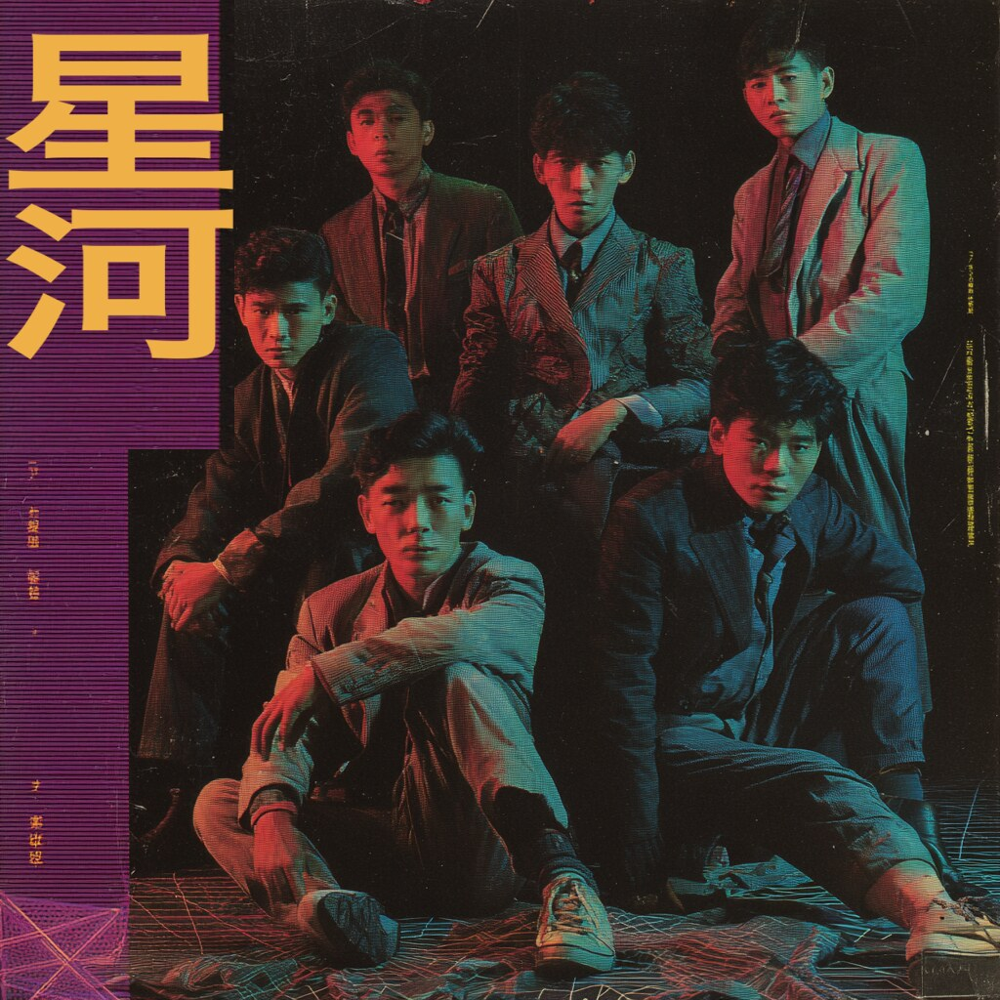

星河乐队 (Xīng Hé Yuè Duì — literally “Star-River Band,” a poetic term for the Milky Way) were a short-lived synth-pop group from the southern Chinese coast, active between roughly 1986 and 1992. Forming in Guangzhou out of members of two earlier college bands, they recorded primarily on cassette and circulated through the dakou (打口) and regional state-label networks of the late 1980s.
Their sound — layered analog synths, slow drum-machine ballads, and softly delivered vocals — drew comparison at the time to Hong Kong electronic acts and the Japanese city-pop records reaching the mainland through Guangdong’s open coast. Two cassette albums are documented: 夏日微风 (Summer Rain, 1989) and 霓虹 (Neon, 1991). Surviving songs include “Wind” (风), “Memories” (回忆), and “Summer Rain” (夏日微风), the last of which remains the most widely circulated.
Recurring lyrical imagery of galaxies, night skies, and moonlight runs throughout the catalogue, in keeping with the band’s name. Documentation is scarce; this page collects what fragments are known.